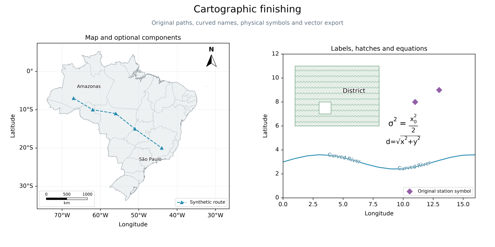
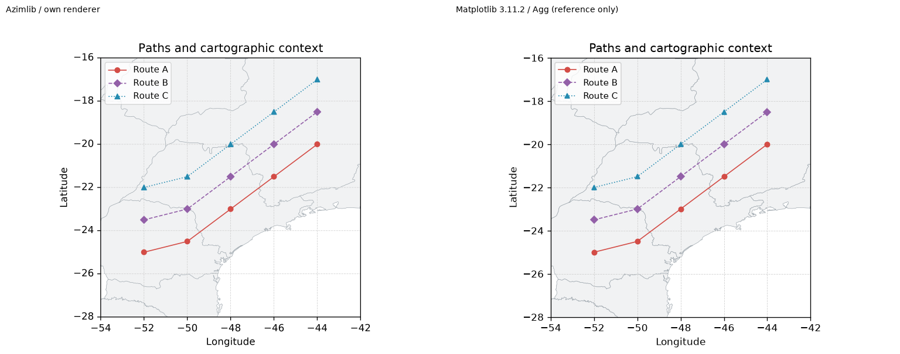

Galeria de acabamento 0.3.0 development
Composição original gerada por finishing_atlas.py com Azimlib; símbolos, polígonos e valores temáticos são sintéticos/originais sob BSD-3-Clause. O contexto brasileiro usa Natural Earth, domínio público; fontes DejaVu conservam os avisos incorporados. Nenhuma imagem de referência, ícone ou implementação foi copiada.

A comparação separada usa dados/rotas próprios iguais e formatter numérico explícito nas duas bibliotecas. Matplotlib é dependência de desenvolvimento apenas do gerador, nunca do runtime. Os PNGs são resultados de composição original; a referência externa e sua versão são identificadas no manifest. Não representa identidade pixel a pixel.

Veja contratos e limitações e manifest. PDF usa contornos vetoriais, sem texto pesquisável neste corte. SVG mantém texto editável; PNG tem antialiasing próprio. Relatórios são locais Windows, não uma nova CI remota ou aceite visual humano de outras plataformas.